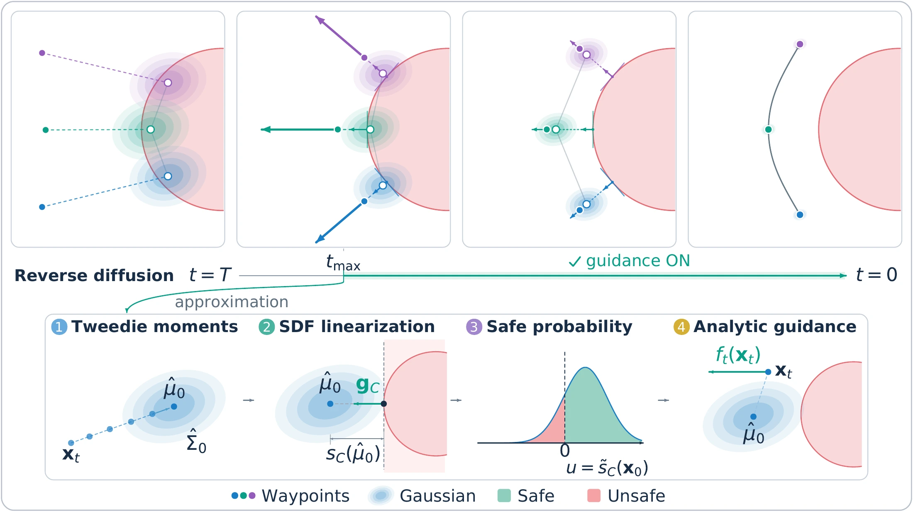
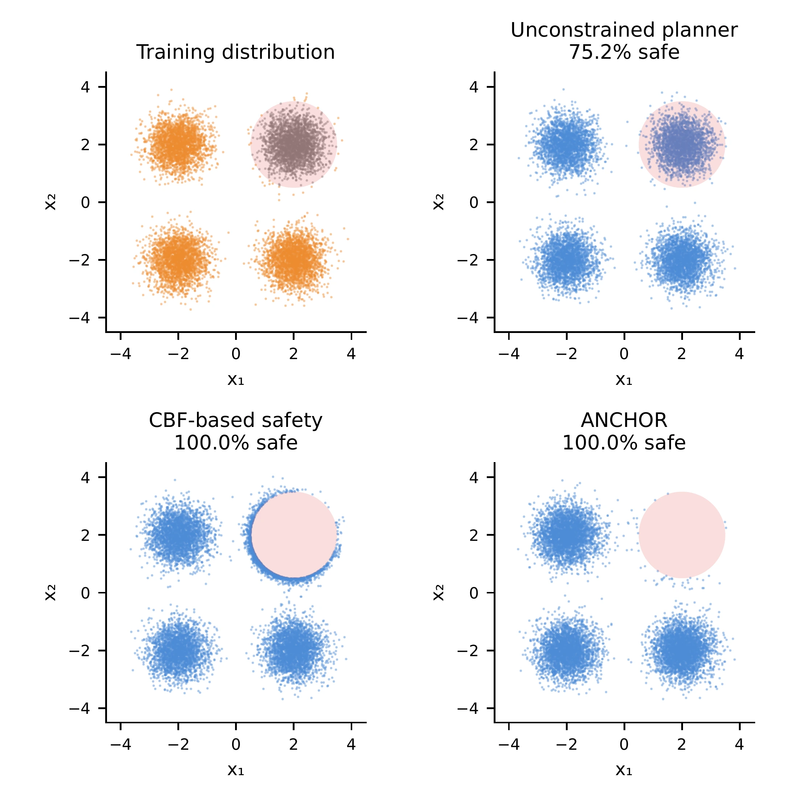
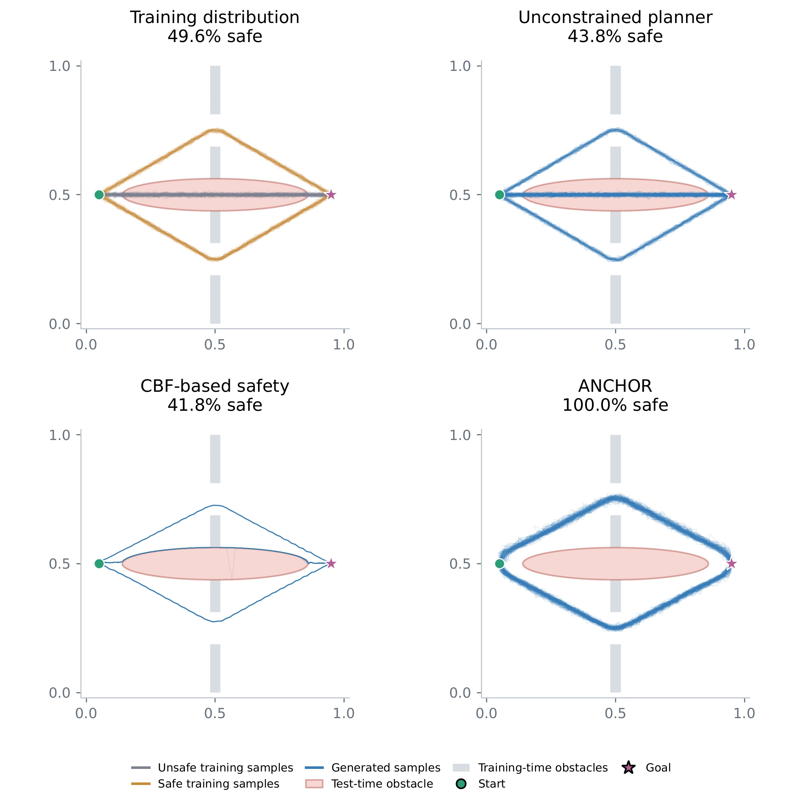
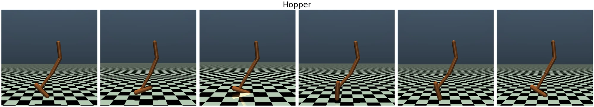
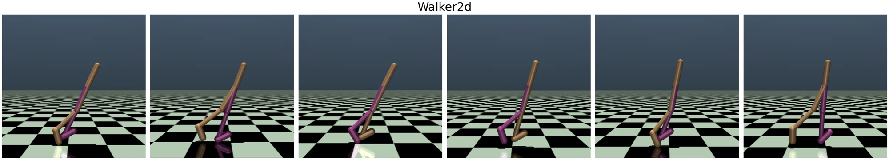
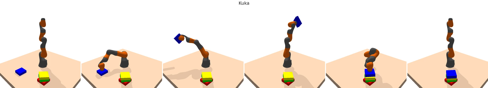

Estimate the clean trajectory
Use Tweedie’s formulas to approximate the clean-data posterior with a Gaussian. Its mean predicts the trajectory; its covariance captures uncertainty.
p(x₀ | xₜ) ≈ 𝒩(μ̂₀, Σ̂₀)
DIFFUSION MODELS · SAFE PLANNING
Condition on safety. Preserve the possibilities.

THE IDEA
Diffusion models learn expressive, multimodal distributions of trajectories. When a new obstacle blocks a familiar route, a safe planner should recover the remaining feasible behaviors while staying faithful to the learned distribution.
We formulate safe planning as sampling trajectories conditioned on collision avoidance. The exact reverse process is characterized by a Doob h-transform, but its safety posterior is generally intractable. ANCHOR approximates this probability analytically: Tweedie moments describe the denoised posterior, and signed-distance geometry reduces the safety integral to a one-dimensional Gaussian tail.
The resulting guidance requires no additional training. Under explicit regularity assumptions on the data distribution and obstacle geometry, the continuous-time guided process is almost surely safe. Experiments investigate conditional distribution recovery, multimodal navigation, locomotion, and manipulation.
HOW IT WORKS
One pretrained score model. A geometric description of the obstacles.
Three steps to guide each denoising update.
Use Tweedie’s formulas to approximate the clean-data posterior with a Gaussian. Its mean predicts the trajectory; its covariance captures uncertainty.
Linearize the obstacle’s signed-distance function around the posterior mean. The Gaussian mass on the safe side becomes a scalar Gaussian CDF.
Add the log-gradient of the estimated safety probability to the score. Activate guidance below a time threshold, when the local approximation is more accurate.
The theorem concerns the continuous-time reverse process under the paper’s assumptions: a bounded-gradient tilt of a Gaussian data distribution and separated obstacles with sufficiently regular boundaries and positive reach. The guarantee also holds for the Hessian-free isotropic covariance approximation. Finite-step sampling and physical execution are evaluated separately; the experiments below report their measured safety rates.
CONDITIONAL DISTRIBUTION RECOVERY
Synthetic tasks reveal both where samples go and how closely
they match the exact safety-conditioned distribution.


RESULTS
Safety, boundary clearance, and task reward tell different parts of the story.
| Method | Planned safe ↑ | Boundary safe ↑ | Reward ↑ | Execution safe ↑ |
|---|---|---|---|---|
| Diffuser | 37.0% | 37.0% | 28.30 ± 37.23 | 37.0% |
| Flow Matching | 29.2% | 29.2% | 21.58 ± 33.81 | 29.7% |
| Truncate | 36.5% | 36.5% | 27.62 ± 36.78 | 37.5% |
| Classifier guidance | 34.4% | 34.4% | 26.57 ± 36.69 | 34.9% |
| SafeDiffuser–RoS | 0.0% | 0.0% | 33.16 ± 39.54 | 41.7% |
| SafeDiffuser–ReS | 37.0% | 37.0% | 28.22 ± 37.13 | 37.5% |
| SafeDiffuser–TVS | 43.8% | 43.8% | 33.10 ± 37.88 | 44.3% |
| FlowMatcher | 0.0% | 0.0% | 0.00 ± 0.00 | 1.0% |
| SafeFlowMatcher | 0.0% | 0.0% | 0.00 ± 0.00 | 1.6% |
| SAD-Flower | 4.7% | 4.7% | 27.95 ± 38.46 | 22.4% |
| ANCHOR | 94.3% | 94.3% | 70.26 ± 18.89 | 94.3% |
| Method | Planned safe ↑ | Boundary safe ↑ | Reward ↑ | Execution safe ↑ |
|---|---|---|---|---|
| Diffuser | 4.7% | 4.2% | 20.71 ± 46.67 | 11.5% |
| Flow Matching | 3.6% | 3.6% | 16.88 ± 44.22 | 8.3% |
| Truncate | 5.7% | 5.2% | 20.51 ± 46.04 | 11.5% |
| Classifier guidance | 4.7% | 4.2% | 21.49 ± 47.56 | 13.0% |
| SafeDiffuser–RoS | Infeasible (0/192 completed plans) | |||
| SafeDiffuser–ReS | Infeasible (0/192 completed plans) | |||
| SafeDiffuser–TVS | 1.6% | 1.6% | 16.06 ± 40.94 | 8.9% |
| FlowMatcher | 0.0% | 0.0% | 7.35 ± 13.37 | 0.5% |
| SafeFlowMatcher | 0.0% | 0.0% | 2.78 ± 8.61 | 0.0% |
| SAD-Flower | 0.0% | 0.0% | 4.35 ± 21.22 | 0.5% |
| ANCHOR (constant) | 25.0% | 22.4% | 79.52 ± 60.22 | 39.1% |
Main comparison from the paper. Planned safety includes added obstacles and maze walls. Boundary safety requires > 0.01 m clearance. Reward is mean ± population standard deviation. The Hard task remains challenging: ANCHOR’s higher reward does not imply uniformly safe plans.
BEYOND NAVIGATION
The same formulation applies to height constraints and joint limits.



| Benchmark | Score / reward ↑ | Planned safe ↑ | Execution safe ↑ |
|---|---|---|---|
| Hopper | 0.437 ± 0.085 | 100% | 39% |
| Walker2d | 0.226 ± 0.154 | 100% | 60% |
| Kuka | 0.680 ± 0.581 | 100% | 100% |
Scores/rewards are mean ± standard deviation. Planned safety and execution safety are distinct: tracking and unmodeled dynamics can lead to violations during locomotion, even when every generated plan satisfies the specified constraint.
Analytical Normal-approximation of Conditional
h-functions for Obstacle-aware Replanning.